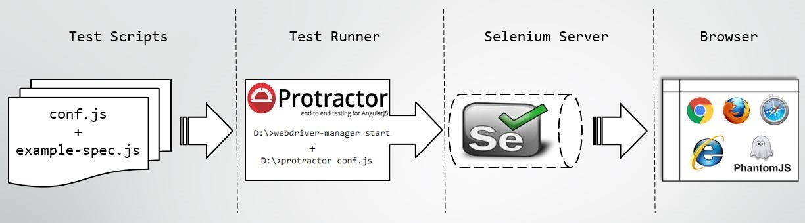

npm install -g protractor
webdriver-manager update
// conf.js
exports.config = {
seleniumAddress: 'http://localhost:4444/wd/hub',
specs: ['example-spec.js']
};
describe(..., function() {
it(..., function() {
// some actions
expect(...).toEqual(...);
});
});
describe('First protractor test', function() {
it('Super Calculator should have a title', function() {
browser.get('http://juliemr.github.io/.../');
expect(browser.getTitle()).toEqual('Super Calculator');
});
});
// calc-spec.js
describe('First protractor test', function() {
it('Super Calculator should have a title', function() {
browser.get('http://juliemr.github.io/protractor-demo/');
expect(browser.getTitle()).toEqual('Super Calculator');
});
});
// conf.js
exports.config = {
seleniumAddress: 'http://localhost:4444/wd/hub',
specs: ['calc-spec.js']
};
webdriver-manager start
protractor conf.js
elementFinder = element( Locator )
elementFinder.Action()
expect( ElementFinder ) ...
// Find an element using an id
by.id('someId')
// Find an element using a class name
by.className('green')
// Find an element using a tag name
by.tagName('a')
// Find an element using a css selector.
by.css('.green')
// Find element using angular model
by.model('x')
element(by.id('someId'))
var el = element(by.id('someId'))
// for buttons, links, etc.
el.click()
// for text inputs
el.sendKeys('abc')
// for text and other inputs
el.getAttribute('value')
// for text nodes
el.getText()
element.all(by.tagName('input'))
var els = element.all(by.tagName('input'))
// count
els.count()
// first and last
els.first()
els.last()
// get by index
els.get(0)
element(by.id('someId')).element(by.tagName('button'))
element(by.id('someId')).all(by.tagName('button'))
protractor conf.js --elementExplorer